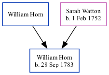

William Horn 1783 -
[ Home ] | [ Calendar ] | [ Surnames Index ] | [ Family History ]The 2nd of 4 children of William Horn and Sarah Watton, William Horn, the four times great-uncle of Nigel Horne, was born on Sep 28, 1783 and baptized in Margate, Kent, England on Oct 26, 1783.
Parents
- Sarah was born on Feb 1, 1752
Media
Kent, Canterbury Archdeaconry baptisms 1538-1912 - GBPRS/CANT/B/96208570
England Births & Baptisms 1538-1975 - R_883172455
Family Tree
Generated by Ged2Site. Last updated on Jul 20, 2025